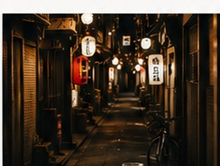
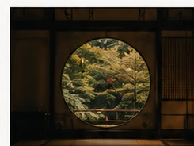

JAPÓN EXTENDIDO · 18–21 DÍAS
Un recorrido completo
por Japón.
Una propuesta amplia que combina grandes ciudades, destinos históricos, naturaleza y una distribución cómoda de las etapas.
DÍAS 01–04Tokio
DÍAS 05–07Alpes japoneses
DÍAS 08–11Kioto
DÍA 12Nara
DÍAS 13–14Hiroshima + Miyajima
DÍAS 15–17Osaka
DÍAS 18–19Tokio



Un ejemplo de distribución de viaje.